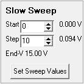

|  | Collector Slow Sweep Sart and Step voltages are
set using signed integers entered into the respective spin edit boxes. The
integers are divided by 100 then assigned the
closest DAC (digital to analog converter) voltage.
Clicking Set Sweep Values sends the two values via the Mini_CT STA and STP commands. After Set Sweep Values is clicked, the sweep ending voltage is updated. Slow sweeping is a one cycle event that occurs when the Run Sweep button is clicked. The sweep begins at the Start voltage and increases or decreases for 255 additional values. Each change is the step voltage. If the voltage reaches the maximum or minimum output befor the 255th step, the voltage will remain at that clipping level for the remaining steps. At the end of a sweep, the collector voltage is reset to zero. The interval between steps is about 0.6ms and a sweep takes about 154ms to complete. Sixteen samples are averaged for each step yielding a lower overall noise and increased resolution (not accuracy). Main |